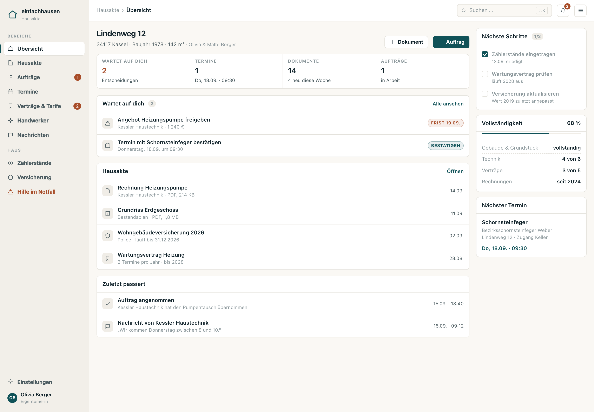
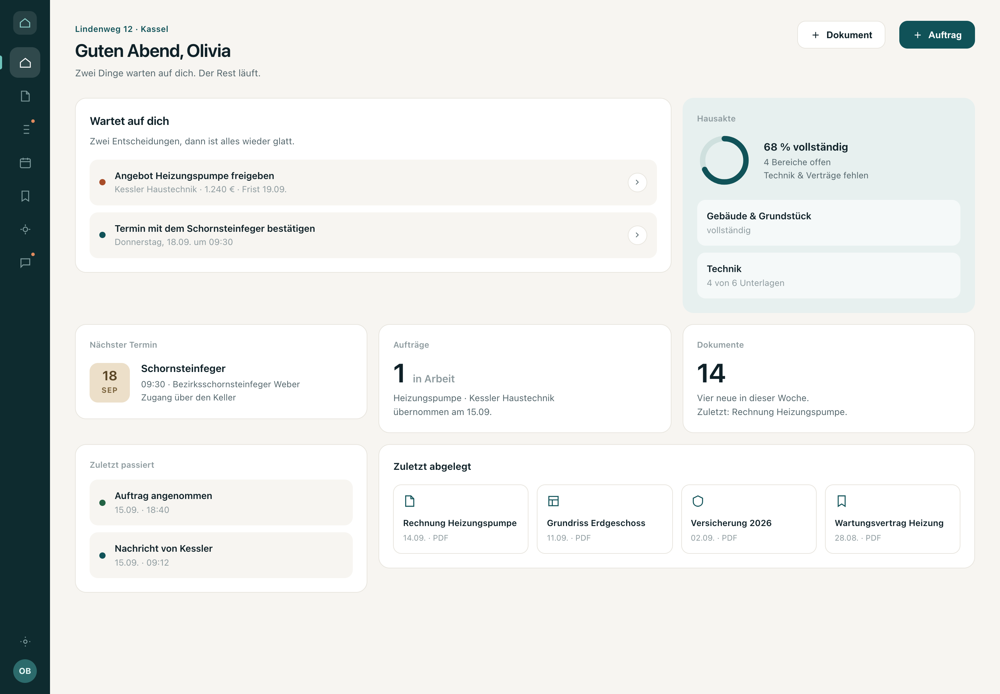
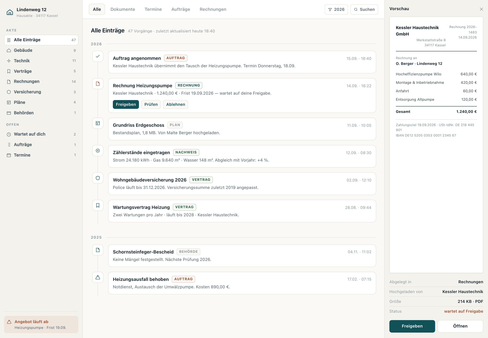

Du hast gesagt: „das sieht nicht aus wie eine App". Das war richtig, und es war mein Fehler,
an Schriftgrößen zu drehen. Schriftgröße ist eine zweite Ableitung — die Gattung entscheidet.
Deshalb hier drei grundsätzlich verschiedene Bauweisen derselben Seite
(/app, Lindenweg 12, identische Daten), aus denen du zeigen kannst,
statt dass ich weiter rate.
Das ist noch kein Code im Repo — das sind drei Prototypen aus reinem HTML/CSS.Alle drei nutzen die echten Markenfarben (Petrol #105258, Sand #ecdfc9, Terrakotta #a84d29)
und die Systemschrift der App. Kein Marketingkopf, keine 44-px-Überschrift, kein Erklärtext-Block.
A
Werkbank
Aufgaben zuerst. Dichte Listen, viel Information pro Bildschirm, wenig Dekoration.
Arbeitsgerät

Was sie gut macht
216-px-Leiste mit allen Bereichen sichtbar — kein Verstecken hinter Menüs.
52-px-Werkzeugleiste mit Suche und ⌘K: fühlt sich an wie ein Werkzeug.
Rechte Spalte trägt Arbeit (nächste Schritte, Vollständigkeit), nicht Leere.
Was sie kostet
Dichter — für Wenig-Nutzer auf dem Handy anspruchsvoller.
Wirkt nüchterner, weniger „einladend".
Braucht mehr echte Daten, sonst sieht die Dichte leer aus.
Aufwand im Repo: mittel-hoch — Leiste, Werkzeugleiste und Zeilenmuster
sind neue Komponenten in packages/eh-design; die 38 bestehenden Seitenköpfe werden ersetzt.
B
Wohnzimmer
Ruhig und großzügig. Wenige, große Karten. Ein Ziel pro Karte.
Verbraucher-App

Was sie gut macht
72-px-Icon-Leiste — maximaler Platz für Inhalt, sehr aufgeräumt.
Große Zahlen (38 px) als Anker: man versteht den Zustand in zwei Sekunden.
Fortschrittsring für die Vollständigkeit der Hausakte — das Kernversprechen wird sichtbar.
Ein Ziel pro Karte: keine Liste, an der man vorbeiscrollt.
Fühlt sich an wie eine gute App aus dem App Store — freundlich, nicht technisch.
Was sie kostet
Wenig Dichte: man sieht nur 2 Vorgänge, muss für den Rest klicken.
Große Karten verbrauchen Platz, ohne mehr zu sagen.
Wirkt eher wie ein Verbraucherprodukt als wie ein Verwaltungswerkzeug.
Die Icon-Leiste versteckt Bereiche hinter Symbolen — man muss sie lernen.
Aufwand im Repo: mittel — wenig neue Struktur, aber die Kartenkomponenten
und der Fortschrittsring sind neu; die Palette braucht mehr Flächen-Token.
C
Akte
Das Haus als Lebenslauf. Ordnerbaum, Zeitachse, Dokumentenvorschau.
Aktenwerkzeug

Was sie gut macht
Nimmt das Produkt beim Wort: „digitale Hausakte" heißt Ordner, nicht Dashboard.
Zeitachse erzählt die Geschichte des Hauses — 2026, 2025, …
Dokumentenvorschau rechts: man sieht die Rechnung, ohne sie zu öffnen.
Drei Spalten wie ein echtes Archivprogramm. Sehr „pro".
Skaliert auf 50 Jahre Hausbesitz — der Bestand wächst nach unten, nicht in die Breite.
Was sie kostet
Die schwierigste Variante — drei Spalten müssen auf dem Handy kollabieren.
Für den Alltag („was muss ich tun?") ist sie indirekter als A.
Braucht eine echte Dokumentenvorschau (PDF-Renderer) — sonst fällt die rechte Spalte flach.
Aufwand im Repo: hoch — neue Datenform (Vorgänge mit Zeitstempel und Ordner),
Vorschau-Infrastruktur, und die Navigation wird von 7 Punkten auf einen Baum umgebaut.